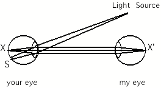
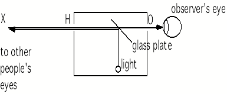

Most of the time the pupil looks black. In a sense however it is incorrect to say that the pupil is black, since it is actually nothing more than a hole situated in the iris, sandwiched between the cornea and the crystalline lens. If the pupil is a hole, why does it appear black? The retina is covered with reddish-tinged blood vessels -- why do we not see the red fundus of the eye? Furthermore, the part of the retina which constitutes the head of the optic nerve (i.e. the blind spot) is actually a dazzling white color. Why do we not see this as a white spot through the pupil? Admittedly it’s dark in there, but if I bring up a light close to someone’s eye, I still can’t see inside, and the pupil still appears black. On the other hand,, under some circumstances the pupil can appear bright: for example when an animal is surprised by car headlights in the road (it was precisely this kind of phenomenon that lead ancient scientists to believe that the eye actually is capable of emitting light, a fact that was only refuted in the 19th century![1]) Another occasion when the pupil can appear bright is in photographs taken with a flash, when people's pupils sometimes appear red.
Hermann von Helmholtz (1821-1894) was one of the first to give a correct explanation of these phenomena. His explanation lead him to the invention of the ophthalmoscope, a device which allows one to see the retina in living eyes, including one's own. This was a revolution in ophthalmology: Up until 1851, no person had ever seen the retina of a living eye, nor had they been able to diagnose different diseases that affect the retina.
The explanation for the blackness of the pupil is known now to be as follows. When I look at your eye, the light that comes from your pupil is coming into my own eyes along a straight approximately parallel path. From the optics of lenses it is known that light that comes out of a lens in a parallel beam must have originated at the focal point of the lens, that is, in the case when the lens is part of your eye, at the point X in your eye in the diagram below. It is therefore a fact that when you look at someone's pupil, actually you are seeing light that is coming off a point X on that person's retina. But now why is there so little light: in other words, why does the retina look dark, when in fact it is red or even white, in places? The answer is that any light that illuminates point X must have come from somewhere. Apart from some slight scattering of light within your eye, it can only have come into your eye via the pupil. Tracing back the path along which any light that lights up point X must have come from, we see that it must have come exactly along the path that I am looking along: it must have come from the point X' of my retina!

It is rather amusing therefore to realize that as people look at each other's eyes, in fact they are looking at corresponding points X and X' on each other's retinas (in a way, eye contact is extremely intimate: it is retinal contact!). Furthermore, each retina is illuminating the other retina, but since retinas do not emit light, everybody only sees blackness! If I had little lights inside my eyes, then everybody else's eyes would appear bright!
Some modification of the above argument must be made to take account of the fact that your eye is not always correctly focussed. One of the consequences of this is that a light source will not project a point on your retina, but rather a small disc, indicated by the region S on the diagram. If the light source is sufficiently close to the axis between your eye and my eye, then the region S on your retina will overlap the point X, and, instead of being dark, it will be light. Light will now come out of your eye and go into mine, and your pupil will appear bright to me. This is what happens in flash photography: if, as is usually the case, the flash is mounted close to the camera lens, then the flash and the lens lie on almost the same axis, and the pupil will appear bright, as seen from the position of the camera lens. This then gives a method to avoid red eyes in photographs: use a flash that can be detached from the camera and held a little ways away from it so that flash and lens are not on the same axis relative to people's eyes.
Pupils usually appear red in flash photographs, presumably because of the red color produced by the bloodflow in the retinal blood vessels. But in the rare case that the person being photographed happens to have turned their eyes in such a way that the camera and flash are imaged on their blind spots, then the light returning out of the eye will be white, and much brighter than usual, because the blind spot, corresponding to the head of the optic nerve, is white and highly reflective. In the photograph below, my daughter and son have managed to place their eyes in this way. Note that because the blind spot is located in the temporal visual field, only one eye at a time can be placed appropriately. Thus, one of their eyes appears white, and the other red.
Red eye and
white eye! As I took the picture, my son and daughter have placed their eyes in
such a manner that their left eye’s blind spot is positioned on the camera
flash. For this reason a bright white spot appears on their left pupil, whereas
their right pupil shows the usual, weaker, red-eye effect deriving from
reflection of the flash off a different portion of the retina. The chances of
this occurring unintentionally are small, which explains why one rarely sees
“white-eye” in photographs.
In this connection it is interesting to observe that in "red eye" photographs, children's eyes appear to be brighter than adults'. One reason may be that children's pupils tend to be larger than adults', thus making the redness easier to see in the photograph. Another factor may be that the optical media inside children's eyes are less cloudy. As we grow older, there are deposits that form in the ocular media which make them disperse the incoming light slightly, thereby making the bright eye effect less pronounced. A more irritating consequence of cloudiness is that the effect creates a kind of background glow that decreases the contrast of the image formed on the retina. Older people are thus more susceptible to dazzling by strong lights, as by oncoming headlights when driving at night. Also, it becomes hard for older people to read text which is written in black on white, because the white background creates stray light inside the eye.
It is easy to construct a piece of apparatus that allows one to see bright pupils everywhere. As explained above, if you had a light in your eyes, then everyone else's eyes would appear bright. A way of achieving the same goal is to use a small plate of glass, such as a microscope slide, which acts as a semi-transparent mirror. This is placed in such a way that light from a light source, such as a flashlight bulb, is reflected precisely along the same axis that you are looking. This can be done by putting the light source and the glass plate in a small box (about 15 cm square) with only two holes (H and O), as shown, and adjusting the angle of the glass plate in such a way that when you look into the box along XHO (i.e. in the backwards direction), the image of the light source and the hole O coincide. The light bulb and glass plate can be mounted conveniently in a piece of polystyrene such as that used commonly in packaging.

diagram
of device to see red eyes everywhere
When the box is correctly adjusted, you place your eye at O, and you look at other people through the box. Their pupils will appear bright red. If you ask people to look to the side so that their blind spot falls on the box and they can no longer see it, then their pupils will appear bright white.
Helmholtz's ophthalmoscope was an improved version of this device, in that it used several glass plates, instead of a single one, placed at a shallow angle: by filtering out polarized light, this allows the unwanted reflection of the light source from the cornea to be removed. Furthermore, Helmholtz's ophthalmoscope contained a concave lens, allowing the observer to actually see, not the pupil of the other person's eye, but a focussed image of the other person's retina, with it's impressive web of blood vessels and with it's blind spot, where the optic nerve leaves the eyeball. A picture of what is seen is shown in Experimental Interlude 3: Experiments with the blind spot.